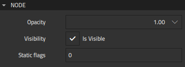
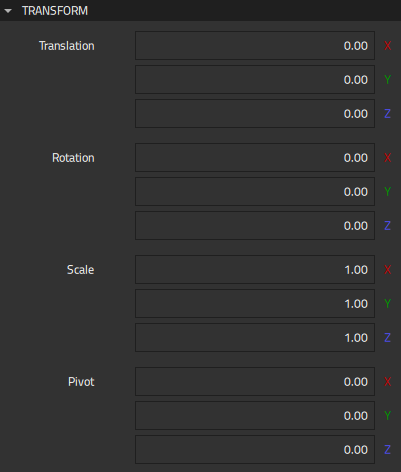

Node
You can set properties for 3D components that are based on the Node component in Properties > Node and Transform.
Setting Node Opacity and Visibility
You can set the opacity and visibility of 3D components that are based on the Node component in Properties > Node.

All components have an Opacity value applied to them. The opacity of 100 makes a component fully opaque, while the opacity of 0 prevents a component from rendering at all.
Just as modifying the position or rotation of a parent component affects all child components, opacity is multiplicatively cumulative through the transform hierarchy. A cube that is 50% opaque inside a group that is 80% opaque renders with an equivalent apperance of 40% opacity (0.8 * 0.5 = 0.4). Setting the opacity of a group to 0 prevents any descendants within the group from rendering.
The Visibility property provides an alternative way to hide and show components. It is useful when you want to show a component in a particular state, but hide it in another state, for example.
The Static flags property is currently not used.
Managing 3D Transformations
You can manage 3D transformations for components that are based on the Node component in Transform.

The value of the Translation property contains the position translation of the component in the local coordinate space established by the parent component. The Orientation property specifies whether the left-handed or right-handed coordinate system is used.
In the y-up left-handed coordinate system, increasing the value of x moves the component to the right, as seen from the default camera location, whereas increasing the value of y moves the component up. Increasing the value of z moves the component away from the camera.
The value of the Rotation parameter sets the local rotation of the component in the space established by the parent component. The Rotation order property specifies whether the left-handed or right-handed (the values with r) rotation about the x, y, and z axes is applied, and the order in which the rotation is applied on each axis.
The value of the Scale property sets the local scale of the component in the space established by the parent component. An odd number of negative scale values causes the component to render inside-out, which cannot be seen due to backface-culling.
The value of the Pivot property sets the local pivot offset for the component. You can think of the pivot as offsetting the geometry for the component away from the origin, allowing a component to rotate and scale around a point other than its local origin. Pivot values are applied before scaling and rotation values.
A line is drawn in the 3D view from the pivot point to the center of the component to provide a visual connection between them.